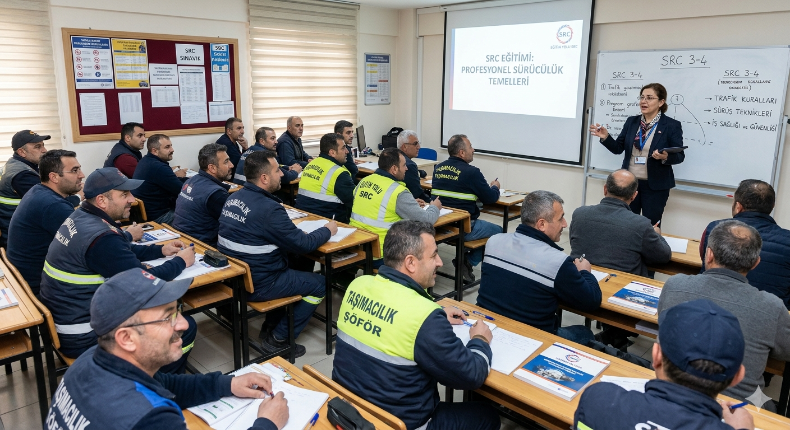
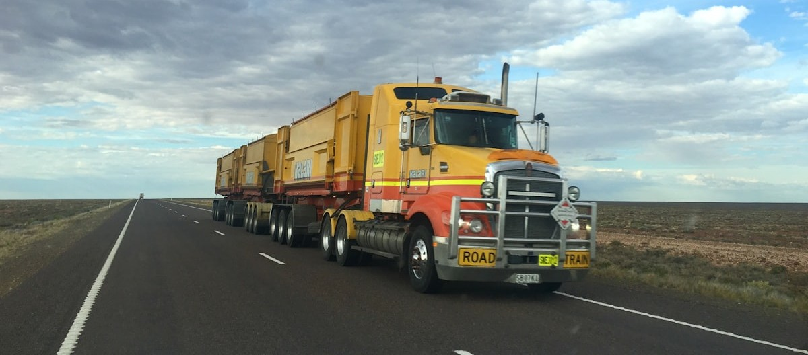

SRC Belgesi Nedir?
SRC (Sürücü Mesleki Yeterlilik Belgesi), ticari araçlarla yük veya yolcu taşıyan sürücülerin mesleki bilgi ve yetkinliklerini kanıtlayan resmi bir belgedir. 4925 Sayılı Karayolu Taşıma Kanunu kapsamında zorunlu tutulmuştur.
Belge; sürücünün karayolu mevzuatını, taşımacılık hukukunu, araç güvenliğini ve acil durum yönetimini öğrendiğini gösterir. Aynı zamanda sigorta ve ruhsat işlemlerinde de aranan bir belgedir.

Kimler SRC Belgesi Almak Zorunda?
Ticari plakalı araçlarla yolcu veya yük taşıyan tüm sürücüler zorunludur. özel araç sahipleri kapsam dışındadır.
- Kamyonet, kamyon ve TIR sürücüleri (SRC 3 veya SRC 4)
- Taksi, dolmuş, minibüs ve otobüs sürücüleri (SRC 1 veya SRC 2)
- Okul ve personel servis sürücüleri (SRC 2)
- Motosiklet ve moped ile kurye yapanlar (SRC Kurye)
- Kargo ve nakliye şirketi sürücüleri (SRC 3 veya SRC 4)

SRC Belge Türleri
| Belge | Kapsam | Süre | Yaş |
|---|---|---|---|
| SRC Kurye | Moto kurye, kargo kuryesi | 25 saat | — |
| SRC 1 | Uluslararası yolcu (SRC 2'yi kapsar) | 40 saat | 26+ |
| SRC 2 | Yurt içi yolcu | 36 saat | 19+ |
| SRC 3 | Uluslararası yük (SRC 4'ü kapsar) | 41 saat | 19+ |
| SRC 4 | Yurt içi yük | 28 saat | 19+ |
2026 Yılı Ceza Tutarları
SRC belgesi olmadan ticari araç kullanan sürücüler hem para cezasıyla hem de ek yaptırımlarla karşılaşır.
| İhlal | Sürücü Cezası | Firma Cezası |
|---|---|---|
| SRC 1, 2, 3 veya 4 eksik | 4.827 TL | 12.178 TL |
| SRC Kurye belgesi eksik | 15.058 TL | — |
| Psikoteknik belgesi eksik | 7.123 TL (ek) | — |
| Aynı yılda 3. ihlal | cezalar 10 katına çıkar | |
SRC Belgesi Nasıl Alınır?
SRC belgesi almak için MEB onaylı bir eğitim kurumuna kayıt yaptırmanız, belirlenen saatlik eğitimi tamamlamanız ve ardından MEB'in düzenlediği teorik e-sınava girmeniz gerekir. Sınavı geçen sürücülere belge düzenlenir.
Tüm bu süreç için adım adım rehberimize bakabilir ya da bizi arayarak kişisel yönlendirme alabilirsiniz.
Psikoteknik Belgesi de Gerekli mi?
Evet. SRC kursuna kayıt yaptırabilmek için önce psikoteknik raporunuzu almanız gerekir. Eksik olduğunda 7.123 TL ayrı ceza uygulanır. Merkezimizde SRC kaydı ve psikoteknik randevusu aynı gün planlanabilir.